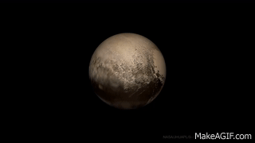

The Solar System

Our Solar system is made of stars, planets, satellites, asteroids and meteroids etc.There are total 9 planets (including pluto) in our solar system. They are in this order Mercury, Venus, Earth, Mars, Jupiter, Saturn, Uranus, Neptune, Pluto(the dwarf planet).

Mercury is the smallest planet in the Solar System and the closest to the Sun. Its orbit around the Sun takes 87.97 Earth days, the shortest of all the Sun's planets.

Venus is the second planet from the Sun.Venus is also the hottest planet in the solar system.

Earth is the third planet from the Sun and the only astronomical object known to harbour and support life. About 29.2% of Earth's surface is land consisting of continents and islands. The remaining 70.8% is covered with water, mostly by oceans, seas, gulfs, and other salt-water bodies, but also by lakes, rivers, and other freshwater, which together constitute the hydrosphere.

Mars is the fourth planet from the Sun and the second-smallest planet in the Solar System, being larger than only Mercury.

Jupiter is the fifth planet from the Sun and the largest in the Solar System. It is a gas giant with a mass more than two and a half times that of all the other planets in the Solar System combined, but slightly less than one-thousandth the mass of the Sun.

Saturn is the sixth planet from the Sun and the second-largest in the Solar System, after Jupiter. It is a gas giant with an average radius of about nine and a half times that of Earth.It only has one-eighth the average density of Earth; however, with its larger volume, Saturn is over 95 times more massive.

Uranus is the seventh planet from the Sun.ranus is similar in composition to Neptune, and both have bulk chemical compositions which differ from that of the larger gas giants Jupiter and Saturn.

Neptune is the eighth and farthest known Solar planet from the Sun. In the Solar System, it is the fourth-largest planet by diameter, the third-most-massive planet, and the densest giant planet.

Pluto (minor planet designation: 134340 Pluto) is a dwarf planet in the Kuiper belt, a ring of bodies beyond the orbit of Neptune. It was the first and the largest Kuiper belt object to be discovered. After Pluto was discovered in 1930, it was declared to be the ninth planet from the Sun. Beginning in the 1990s, its status as a planet was questioned following the discovery of several objects of similar size in the Kuiper belt and the scattered disc, including the dwarf planet Eris. This led the International Astronomical Union (IAU) in 2006 to formally define the term "planet"—excluding Pluto and reclassifying it as a dwarf planet.
Thanks For Seeing my website!